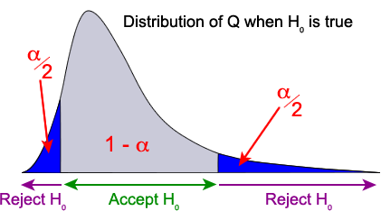

Revisiting p-values
A hypothesis test is based on two competing hypotheses about the value of a parameter, \(\theta\). The null hypothesis is the more restrictive of these. Since it is the simpler of the two hypotheses, it is the one that we would like to accept, provided there is no evidence to the contrary,
The alternative hypothesis may be one- or two-tailed, depending on the context of the problem, but we will start by considering a one-tailed alternative of the form,
The hypothesis test is based on a test statistic that is some function of the data values,
\[ Q \;\;=\;\; g(X_1, X_2, \dots, X_n \mid \theta_0) \]whose distribution is fully known (without any unknown parameters) when H0 is true (i.e. when \(\theta_0\) is the true parameter value). This distribution might, for example, be a normal(0, 1), t, Chi-squared or F distribution.
To perform the test, we evaluate the test statistic and refer it to the standard distribution to assess whether it is 'unusual' enough to throw doubt on the null hypothesis. This can be done by evaluating a p-value for the test — the probability of a value as extreme as that observed.
P-values close to zero throw doubt on the null hypothesis.
Fixed significance level
An alternative way to perform the test involves a rule that results in a decision about which of the two hypotheses holds. Based on the data, we either decide that the null or alternative hypothesis is true, but any such data-based rule can lead us to the wrong conclusion and we must take into account the probability of making a mistake in our decision.
The test starts with a fixed significance level, \(\alpha\).
Definition
The significance level is the probability of wrongly concluding that H0 does not hold when it actually does.
For example, it might be acceptable to have a 5% chance of concluding that \(\theta \gt \theta_0\) when \(\theta\) is really equal to \(\theta_0\). This means a significance level of \(\alpha = 0.05\) for the test.
The significance level is the tail area of the test statistic's distribution that will lead to us conclude that the null hypothesis does not hold and this "rejection region" can be determined before we even collect any data.

When the test statistic, \(Q\), is evaluated from the data, its value determines whether we will conclude that H0 is true or false (accepted or rejected).
Two-tailed tests
For a two-tailed test with hypotheses
both high and low values of the test statistic usually provide evidence that the alternative hypothesis holds. Values at both tails of the distribution of the test statistic, \(Q\), therefore result in rejection of H0, so the corresponding tail areas should each have area \(\diagfrac {\alpha} 2\) for a test with significance level \(\alpha\).

Saturated fat content of cooking oil
Cooking oil made from soybeans has little cholesterol and has been claimed to have only 15% saturated fat. A clinician believes that the saturated fat content is greater than 15% and randomly samples 13 bottles of soybean cooking oil for testing.
| 15.2 12.4 |
15.4 13.5 |
15.9 17.1 |
16.9 14.3 |
19.1 18.2 |
15.5 16.3 |
20.0 |
Assuming that the data are a random sample from a normal distribution, the clinician wants to test the following hypotheses.
H0 : \(\mu = 15%\)
HA : \(\mu \gt 15%\)
What is his conclusion from testing these hypotheses with a significance level of \(\alpha = 5\%\)?
A significance level of \(\alpha = 0.05\) means that the clinician is willing to wrongly conclude that the saturated fat content is over 15% when it really is 15%, with probability 0.05.
The test should be based on a test statistic
\[ T \;\;=\;\; \frac{\overline{X} - 15}{S/\sqrt{13}} \]which has a \(\TDistn(12 \text{ df})\) distribution when the null hypothesis is true. For a 5% significance level, the rejection region should be high values of the test statistic above the 95th percentile of the distribution, 1.782.
\[ P(T \gt 1.782) \;\;=\;\; 0.05 \]From the data set, the t-statistic is
\[ t \;\;=\;\; \frac{\overline{x} - 15}{s/\sqrt {13}} \;\;=\;\; 1.906 \]Since this is in the rejection region of the test (\(t \gt 1.782\)), our conclusion should be that the mean percentage of saturated fat being 15% is rejected at the 5% significance level.
If testing at a 1% significance level, the rejection region would be t-values greater than 2.681 since
\[ P(T \gt 2.681) \;\;=\;\; 0.01 \]At this significance level, we would accept the null hypothesis that \(\mu = 15\).